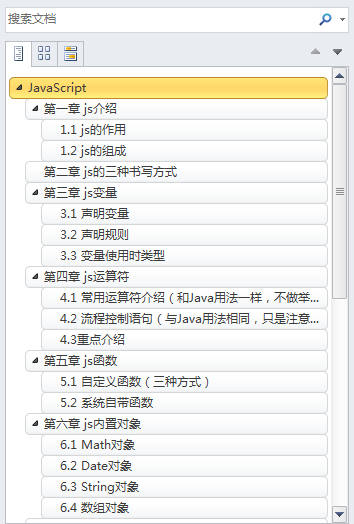
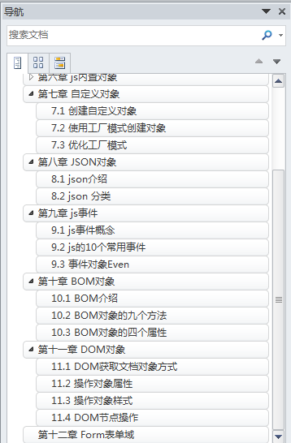
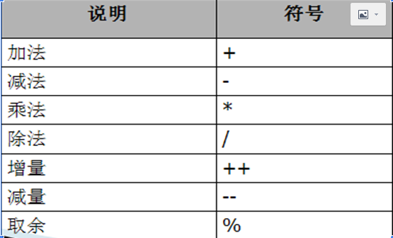
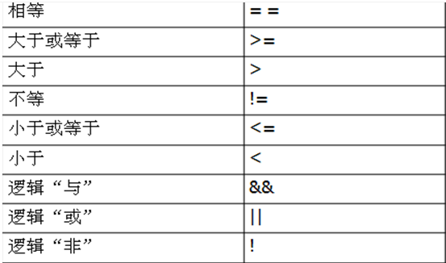
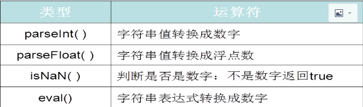

小编整理javascript用的是有道云笔记，导出的word版本，但是代码块显示格式是乱的，不便于阅读
所以，各位有需要的话，小编可以将导出的pdf版发给大家！pdf版跟word没有什么区别，知识没法编辑而已！


js是和html混合使用的一种脚本语言，其编写的程序可以直接在浏览器中解析运行
Html：设计页面
CSS：美化页面
js：做校验、动画效果
（1）ECMAScript：JavaScript的核心
（2）DOM（文档对象模型）：
是HTML和XML的应用接口，DOM将整个页面规划成由节点层级构成的文档
（3）BOM（浏览器对象模型）:
对浏览器窗口进行访问操作
（1）直接书写在HTML标签中
注：onclick为js的点击事件，alter（）为js的BOM方法
<input type="button" value="第一个js" onclick="alert('hellojavaScript01')"/>
（2）书写在js代码块中
<!doctype html>
<HTML>
<head>
<meta charset="UTF-8">
<title></title>
<!--声明一个js代码块 -->
<script type="text/javascript">
/*函数*/
function testfunction(){
alert("hellojavaScript02")
}
</script>
</head>
<body>
<input type="button" value="第二个js" onclick="testfunction();"/>
</body>
</HTML>
（3）外部书写一个js文件，通过语句进行引入
!doctype html>
<HTML>
<head>
<meta charset="UTF-8">
<title></title>
<!--引用js文件-->
<script src="js/myjs.js" type="text/javascript" charset="utf-8"></script>
</head>
<body>
<input type="button" value="第三个js" onclick="test03()"/>
</body>
</HTML>
js文件
/*函数*/
function test03(){
alert("hellojavaScript02")
}
（1）没有类型，只能用var进行修饰
（2）全局变量，在js代码块内部并且在方法体外部进行声明
（3）局部变量，在方法体内部进行声明
（4）当声明没有加var时，第一次使用，局部变量会变为全局变量
（5）当变量只声明，未赋值时，默认为undefined
（1）必须以英文字母或者“_”或者“$”开头
（2）长度不能超过255个字符
（3）变量名中不允许有空格
（4）不能将关键字作为变量名，例如var、* 等
（5）变量名区分大小写
（1）原生类型（number、string、boolean）
function testNumber(){
var a1 = 100;
var b1 = 200.2;//alert(typeof b1);
var varstr = "abc";
var varstr2 = 'bcd'; //都代表字符串
var bool = false;//boolean类型
}
（2）对象类型（array、date）
//2：对象 Date Array
function testObj(){
var vardate = new Date();
//alert(vardate+"--"+typeof vardate);
var varstr = vardate.getFullYear()+"-"+(vardate.getMonth()+1)+"-"+vardate.getDate()+" "+vardate.getHours()+":"+vardate.getMinutes()+":"+vardate.getSeconds();
alert(varstr);
}
（3）特殊类型（a、声明未赋值；b、赋值为null）
a：当只声明不赋值时，变量值为undifined，类型为：undifined
b：当赋值为null时，变量值为null，类型为object，即对象类型
//3:特殊类型
function testTs(){
//只声明没有赋值
var var01;
//alert(var01+"--"+typeof var01);//undefined--undefined
//声明并赋值null
var var02 = null;
alert(var02+"--"+typeof var02);//null--object
}
注：可以通过typeof：方法来判断数据类型
其中，number类型有两种特殊情况：
一是：NAN，表示not a number
二是：infinity：表示无穷大，即当除数为0的时候会出现的情况；
var d1 = Number("a");
//alert(d1+"--"+typeof d1);//NaN(not a number)--number
var e1 = 1/0;
alert(e1+"--"+typeof e1);//Infinity(无穷大)--number


//if else
function testif(){
if(true){
alert(true);
}else if(false){
alert(false);
}
}
//for 9*9
function testfor(){
for(var i=1;i<=9;i++){
for(var j=1;j<=i;j++){
//alert(j+"*"+i+"="+j*i);
window.document.write(j+"*"+i+"="+j*i+" ");
}
window.document.write("<br/>");
}
}
（1）等同符：===
理解：先比较数据类型，再比较数据的值
//===等同符 : 先比较数据的类型再比较数据的值
var a = 1;
var b = true;
var c = 'true';
var d = "true";
var e = "1";
//alert(a===b);//false
//alert(a===c);//false
//alert(b===c);//false
//alert(c===d);//true
//alert(a===e);//false
（2）等值符：==
理解：先判断数据类型，如果不一致，都会向number类型转型再比较
//==等值符 : 先判断数据的类型，如果发现类型不一致都会向number转型再比较
alert(a==b);// true
alert(a==c);// false (NaN 与任何数据相加减都是NaN,自己都不等于自己)
alert(b==c);// false
alert(c==d);// true
alert(a==e);// true
（3）类型转换
a、字符串和数字布尔相加
b、字符串和其他类型相加都会同化成字符串
c、数字和boolean类型相加都会同化成数字
var varstr = "abc";
var varnum = 123;
var varbool = true;
alert(varstr+varnum+varbool); //abc123true
alert(varnum+varbool+varstr); //124abc
alert(varbool+varnum+varstr); //124abc
（1）方法一：普通方法
function 函数名(参数1,参数2，… ) {
JavaScript代码;
}
（2）方法二：把函数引用赋值给一个变量
var 函数名 = function (参数1,参数2，… ) {
JavaScript代码;
}
（3）方法三：通过new的方式创建函数
var test = new Function("a","b","var c = a + b");
//注意，Function，F要大写
注：
（1）如果js函数没有返回值，则返回undifined
（2）自定义函数不会自动执行，需要调用才会执行
（3）不需要指明参数类型，因为变量没有类型
（4）无论是否有返回值，都无需指定返回值类型。
（5）函数之间可以相互调用

常用函数如下：
（1）Math.random():产生随机数，可参考Java
//生成4位随机数
for(var i=0;i<1000;i++){
var varnum = Math.random()*9000+1000;//1000-9999
var varnum2 = parseInt(varnum);
//alert(varnum2);
console.info(varnum2);
}
（2）Math.round()：四舍五入
//1.2:round()四舍五入，
var varround = Math.round(-0.1);//0
//alert(varround);
（3）Math.ceil()；向上取整
//1.3: ceil()向上取整，
var varceil = Math.ceil(-1.1);//-1
//alert(varceil);
（4）Math.floor():向下取整
//1.4: floor()向下取整
var varfloor = Math.floor(5);//5
alert(varfloor);
常用函数：
（1）getFullYear()：返回年份
（2）getMonth()：返回月份，从0开始计数，如要得到当前月份，需+1
（3）getDate()：返回几号
（4）getHours()：返回小时
（5）getMinutes()：返回分钟
（6）getSeconds()：返回秒数
var vardate = new Date();
//alert(vardate+"--"+typeof vardate);
var varstr = vardate.getFullYear()+"-"+(vardate.getMonth()+1)+"-"
+vardate.getDate()+" "+vardate.getHours()+":"+vardate.getMinutes()+":"
+vardate.getSeconds();
alert(varstr);
}
（1）length属性
（2）charAt(idx) 返回指定位置处的字符串
（3）indexOf(Chr) 返回指定字符串的位置
（4）substr(m,n)返回指定字符串从m位置开取n个字符，如果参数n省略则意味着取到字符串的末尾
（5）substring(m,n) 返回指定字符串从m位置开始到n位置结束(不包括n位置处的字符串)，如果参数n省略则意味着取到字符串的末尾
（6）toLowerCase() 转成小写
（7）toUpperCase() 转成大写
var varstr = "abcDEF123,";
//1、字符串的属性 length
var varlen = varstr.length;
//把字符串的最后一个，去掉
var varsubstr01 = varstr.substr(0,varstr.length-1);
var varsubstring01 = varstr.substring(0,varstr.length-1);
//字符串的方法
//2.1: charAt(idx) 返回指定位置处的字符串，找不到什么也不显示
var varcharAt = varstr.charAt(9);
//2.2: indexOf(Chr) 返回指定字符串的位置，如果找不到就返回-1
var varindeOf = varstr.indexOf("d");
//substr(m,n)返回指定字符串从m位置开截取n个字符，如果参数n省略则意味着取到字符串的末尾，
var varsubstr = varstr.substr(1,3);//bcD
//substring(m,n) 返回指定字符串从m位置开始到n位置结束(不包括n位置处的字符串)，如果参数n省略则意味着取到字符串的末尾，
var varsubstring = varstr.substring(1,3);//bc
//toLowerCase() 转成小写，
//alert(varstr.toLowerCase());
//toUpperCase() 转成大写，
//alert(varstr.toUpperCase());
js中的数组相当于Java中的集合容器，可以存储任意的数据类型，长度可变
声明数组的三种方式：
//声明一个数组
var arry01 = new Array();
var array02 = new Array(10);
var array03 = [123,"abc",new Date(),true];
常用方法和属性：
（1）length：长度
//1：数组的属性 length 长度
var varlength = array02.length;//10
var varlength2 = array03.length;//4
（2）push("aa")：数组的末尾添加一项元素
array03.push("hello");//array03 =[123,"abc",new Date(),true,"hello];
（3）pop()： 删除数组最后一个项
array03.pop();//array03 = [123,"abc",new Date(),true];
（3）unshift("aa") ：在数组第一个元素位置添加元素
array03.unshift("aa");//array03 = ["aa",123,"abc",new Date(),true];
（4）shift() ：删除数组第一个元素
array03.shift();//array03 = [123,"abc",new Date(),true];
（5）join("-")：连接所有
alert(array03.join("-"));//123-abc-(当前时间)-true
遍历数组的两种方式
var array03 = [123,"abc",new Date(),true];
//方法一：for
for(var i=0;i<array03.length;i++){
alert(array03[i]);
}
//方法二：for in
for(var i in array03){
alert(array03[i]);
}
注：
（1）可以通过修改数组长度来达到删除数组内容的mud
（2）splice（index,m,n）方法
index:数组索引下标
m:要删除几个元素
n：要代表的元素
数组名.splice(1):只指定下标，表示要删除指定位置后所有的元素
（1）创建对象（两种方法）
var obj01 = new Object();
var obj02 = {};
（2）添加属性
obj02.name = "zhangsan";
obj01.pwd = 123;
obj01.fav = ["学习","王者荣耀","吃鸡"];
（3）添加方法
obj01.study = function(){
alert("good good study");
return "A";
}
（4）调用属性和方法
var varname = obj02.name;
var varfav = obj01.fav;
alert(obj01.study()) ;
/使用方法(工厂)创建对象
function createuser(name,pwd){
var user = {};
user.name = name;
user.pwd = pwd;
user.fav = ["学习","王者荣耀","吃鸡"];
user.study = function(){
alert("good good study");
return "A";
}
//返回
return user;
}
var user1 = createuser("李四",123);
var user2 = createuser("张三",123);
注意：当user1对象调用fav属性的时候，对fav属性进行修改不会影响user2对象的fav属性
因为：user1和user2属于两个不同的对象，fav分属于两个对象，改变一个，另一个不会产生
任何变化。
//把爱好存放到公共的区域--prototype(原型)
createuser2.prototype.fav = ["学习","王者荣耀","吃鸡"];
//优化创建user对象
function createuser2(name,pwd){
//this代表当前对象
this.name = name;
his.pwd = pwd;
this.study = function(){
alert("good good study");
}
}
var user1 = new createuser2("wangwu",123);
var user2 = new createuser2("zhaoliu","abc");
注意：此时，fav属性放在了公共区域，user1对象改变了fav属性，user2的fav属性也会
改变，因为fav属性为对象所共享，一旦改变，所有对象都会受到影响
JavaScript Object Notation ：是一种数据格式，用于服务器和客户端的数据交互格式
以键值对的方式进行数据交互：key：value；可以通过key值获取到value值
通常客户端和服务器端传输数据方式有三种：
（1）form表单（get方式和post方式）
（2）ajax
（3）超链接 a 标签
（1）单个JSON
var json01 = {
name:"zhagsan",
pwd:123,
fav:["逛街","学习"],
run:function(){
alert("go go go");
}
}
//调用json的属性和方法
alert(json01.name);
json01.run();
（2）多个JSON（数组）
//创建多个json
var jsonarry = [{name:"zhangsan",pwd:123,sex:"男"},
{name:"zhangsan2",pwd:124,sex:"男2"},
{name:"zhangsan3",pwd:125,sex:"男3"}];
//获取zhangsan3
alert(jsonarry[2].name);
（3）JSON嵌套
var jsonjson = [{province:"河北省",city:"石家庄",address:{town:"尼玛县",country:"张村",group:"001组"}},
{province:"河南省",city:"郑州",address:{town:"湖滨县",country:"张村2",group:"001组2"}},
{province:"山西省",city:"太原",address:{town:"尼玛县3",country:"张村3",group:"001组3"}}];
alert(jsonjson[2].address.town);
事件就是可以被js侦测到的行为
网页中的每个元素都可以产生某些可以触发js的事件，比如：点击按钮，就可以触发一个事件
事件通常是和函数配合使用，这样就可以通过发生的事件来驱动函数执行
<style type="text/css">
div{
border: solid 1px red;
width: 200px;height: 200px;
}
</style>
（1）onclick：点击事件
</div><br />
<input type="button" value="testonclick" onclick="testOnclick();"/>
</div>
//1:单击事件 --onclick
function testOnclick(){
alert("我单击了一下");
}
（2）ondbclick：双击事件
</div>
<br />
<input type="button" value="testOndblclick" ondblclick="testOndblclick();"/>
</div>
//2:双击事件--ondblclick
function testOndblclick(){
alert("我双击了");
}
（3）onmousemove：鼠标移动事件
</div>
<br />
<div id="div01" onmousemove="testOnmousemove();">
</div>
//3:鼠标移动事件--onmousemove
function testOnmousemove(){
alert("我移动了");
}
（4）onmouseenter：鼠标进入事件
</div>
<br />
<div id="div01"onmouseenter="testOnmouseenter();">
</div>
//4:当鼠标移进去触发的事件-- onmouseenter function testOnmouseenter(){ alert("我进来了"); }
（5）onmouseout：鼠标移出事件
</div>
<br />
<div id="div01" onmouseout="testOnmouseout();">
</div>
//4:当鼠标移出去触发的事件-- testOnmouseout
function testOnmouseout(){
alert("我出去了");
}
（6）onkeyup：键盘按下并弹起事件
<input type="text" value="" onkeyup="testOnkeyup(this.value);"/>
//6：键盘按下并弹起的时候会触发事件 --onkeyup
function testOnkeyup(str){
alert(str);
}
（7）onfocus：成为焦点
<input type="text" id="textid" value="请输入用户名" onfocus="this.value=''"/>
（8）onblur：失去焦点
<input type="text" id="textid" value="请输入用户名" onfocus="this.value=''" onblur="testOnblur(this.value);"/>
//8:当对象失去焦点 --onblur
//如果输入框里面没有内容就显示--请输入用户名
//如果输入框里面有内容就不做其他操作
function testOnblur(str){
//alert(str);
if(str==""){
//通过id来获取对象
document.getElementById("textid").value = "请输入用户名";
}else{
return;
}
}
（9）onchange：对象发生改变
<select onchange="testOnchange(this.value);">
<option value="1">6K</option>
<option value="2">10K</option>
<option value="3">20K</option>
<option value="4">40K</option>
</select>
//9:当对象发生改变的时候-- onchange
function testOnchange(str){
alert(str);
}
（10）onload；页面装载完成后触发的代码
<body onload="testOnload()">
<div id="divdate" style="border: solid 1px red;height: 20px;">
</div>
</body>
//10:页面装载 完成后触发的代码 --onload
function testOnload(){
var d = new Date();
var str = d.getFullYear()+"-"+(d.getMonth()+1)+"-"+d.getDate()+" "+d.getHours()+":"+d.getMinutes()+":"+d.getSeconds();
//获取divdate对象
document.getElementById("divdate").innerText = str;
window.setTimeout(testOnload,1000);
}
注：通常用id获取对象
document.getElementById("textId").value = str
Even对象代表着事件的状态，比如：键盘按键状态、鼠标位置、鼠标按钮状态
（1）当键盘按下就触发的事件 ：onkeydown
由于不同的浏览器，内核不一样，能解析的js代码有所区别，所以
var eve = event || window.event;
eve.keyCode;//获取不同按键的状态码；↑：38 ↓：40 enter：13
（2）获取鼠标当前的坐标
var eve = event || window.event;
var X = eve.pagex || eve.x;
var Y = eve.pagey || eve.y;
Browser Object Model 浏览器对象模型
作用：主要用于管路窗口和窗口之间的通讯。核心对象为window
（1）alert（）：警告
（2）confirm（）：确认框，有返回值
（3）prompt（参数1，参数2）：提示框
（4）setTimeout（函数，时间）：定时执行，只会执行一次
（5）open（）、close（）：打开新页面、关闭页面
（6）setInterval（）：间隔执行，隔一定时间执行一次
（7）clearTimeOut（）：关闭定时执行
（8）clearInterval（）：关闭间隔执行
（9）opener：子页面调用父页面方法（必须有父页面打开子页面）
（1）screen：银屏
var varw = window.screen.width;// 返回当前屏幕宽度(分辨率值)
var varh = window.screen.height;//返回当前屏幕高度(分辨率值)
var varwa = window.screen.availWidth;//返回当前屏幕宽度(空白空间)
var varha = window.screen.availHeight;//返回当前屏幕高度(空白空间)
（2）location：地址
window.location.reload();//刷新本页面
window.location.href = "http://www.sohu.com";//相当于html的a超链接
alert(window.location.host);//主机名+端口号
alert(window.location.hostname);//主机名
alert(window.location.port);//端口号
（3）history：历史
history.go(0):刷新页面
（4）navigator：浏览器导航
window.navigator.appName 浏览器名称；
window.navigator.appVersion 浏览器版本；
window.navigator.userAgent 浏览器类型
<body>
<div id="div01">
<input type="text" id="textid" value="张三" />
<br />
<input type="radio" name="sex" value="1" id="sexman"/>男
<input type="radio" name="sex" value="0" id="sexwomen"/>女
</div>
<br />
<input type="button" value="直接获取" onclick="testgetObj();"/>
<input type="button" value="间接获取" onclick="testgetObj2();"/>
<input type="button" value="节点的类型" onclick="testNodeType();"/>
</body>
一：直接获取
//1：id获取--获取单个对象
var varinput = document.getElementById("textid");
//2:name获取--获取的是数组
var varsex = document.getElementsByName("sex");
//3:通过标签的名称(元素的名称)来获取--获取的是数组
var varinputs = document.getElementsByTagName("input");
二：间接获取
（1）父子关系：childNodes
//1：父子关系
//获取父亲节点
var varfather = document.getElementById("div01");
//通过父节点获取子节点
var sons = varfather.childNodes;
（2）子父关系：parentNode
//2：子父关系 -- 父节点只有一个
//获取一个字节点
var varson = document.getElementById("textid");
//通过子节点获取父节点
var varfather2 = varson.parentNode;
（3）兄弟关系：nextSibling：下一个节点
proviousSibling：上一个节点
//3：兄弟关系 nextSibling下一个节点
var varsexman = document.getElementById("sexman");
var varsexwomen = varsexman.nextSibling;
//alert(varsexwomen.textContent); //获取文本节点的内容
//alert(varsexwomen.value);
//上一个节点 previousSibling
var varsexwomen2 = document.getElementById("sexwomen");
var varsexman2 = varsexwomen2.previousSibling;
alert(varsexman2.textContent);
注：判断节点类型：NodeType
1代表：元素节点
2代表：属性节点
3代表：文本节点
<body>
<input type="text" name="uname" id="unameid" value="张三" abc="hello"/>
<br />
<div id="dvi01">
<h2>几天星期五</h2>
</div>
<font></font>
<tr></tr>
<td></td>
<input type="button" value="testAttribute" onclick="testAttribute();"/>
<input type="button" value="testdiv" onclick="testdiv();"/>
</body>
1：获取属性的值
a)对象.属性名
b)对象.getAttribute(属性名) --可以获取新增属性的值
//dom操作对象的属性
var varinput = document.getElementById("unameid");
//获取属性
//1：对象.属性名 -- 原有属性
var varname = varinput.name;
var varval = varinput.value;
//alert(varname+"--"+varval);
//2: 对象.getAttribute -- 新增属性
var varabc = varinput.getAttribute("abc");
var varattrname = varinput.getAttribute("name");
//alert(varabc+"--"+varattrname);
2：设置属性的值
a)对象.属性名 = "属性值"
b)对象.setAttribute(属性的名称,属性的值)
//设置属性
//1： 对象.属性名 = 属性值
varinput.name = "uname2";
varinput.value = "张三丰";
//2：对象.setAttribute
varinput.setAttribute("name","uname3");
varinput.setAttribute("abc","hello2");
varinput.setAttribute("value","李四 ");
3:获取没有value属性的元素的文本
a)对象.innerText
b)对象.innerHTML
//获取值
//获取文本 对象.innerText -- 只获取文本
var vardiv = document.getElementById("dvi01").innerText;
//alert(vardiv);
//获取html 对象.innerHTML -- 可以获取里面的标签和文本
var vardiv2 = document.getElementById("dvi01").innerHTML;
//alert(vardiv2);
4:设置没有value属性的元素的文本
a)对象.innerText = "普通文本"不能解析html，会将语句当做普通文本进行显示
b)对象.innerHTML = "带有标签的文本"可以解析文本中html语句
//设置值
document.getElementById("dvi01").innerText = "<font style='color: red;'> 今天星期五，晚上吃烤鱼</font>";
document.getElementById("dvi01").innerHTML = "<font style='color: red;'> 今天星期五，晚上吃烤鱼</font>";
<style type="text/css">
#div01{
border: solid 1px red;
height: 300px;
width: 300px;
}
.classname{
color: blue;
font-size: 50px;
background-color: pink;
}
</style>
（1）对象.style.样式的名称 = "样式的值"
//1：对象.style.样式名=值
function testJScss(){
var vardiv = document.getElementById("div01");
vardiv.style.backgroundColor = "green";
vardiv.style.fontSize = "30px";
vardiv.style.color = "gold";
}
（2）对象.className = "class的值"
<style type="text/css">
.classname{
color: blue;
font-size: 50px;
background-color: pink;
}
</style>
<script type="text/javascript">
//2: 对象.className=类名
function testJScss2(){
var vardiv = document.getElementById("div01");
vardiv.className = "classname";
}
（1）创建节点 createElement()
var varinput02 = document.createElement("input");
varinput02.type = "button";
varinput02.value = "删除";
（2）添加节点 appendChild()
vardiv01.appendChild(varinput02);
（3）替换节点 replaceChild()
（4）删除节点 removeChild()
//获取div01对象
var vardiv01 = document.getElementById("div01");
vardiv01.removeChild(varinput02);
12.1 From表单属性
（1）disabled :
不可以编辑，也不可以提交 ，但是可以通过js来修改它的效果(true(有效果),false(没有效果))
（2）readonly :
不可以编辑，但是可以提交
12.2 From表单方法
（1）submit() 提交form表单
（2）focus()获取焦点
（3）blur()失去焦点